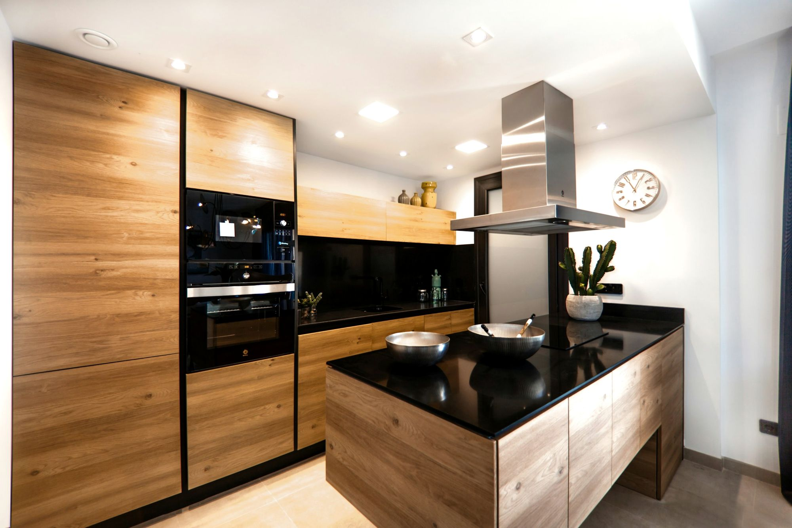
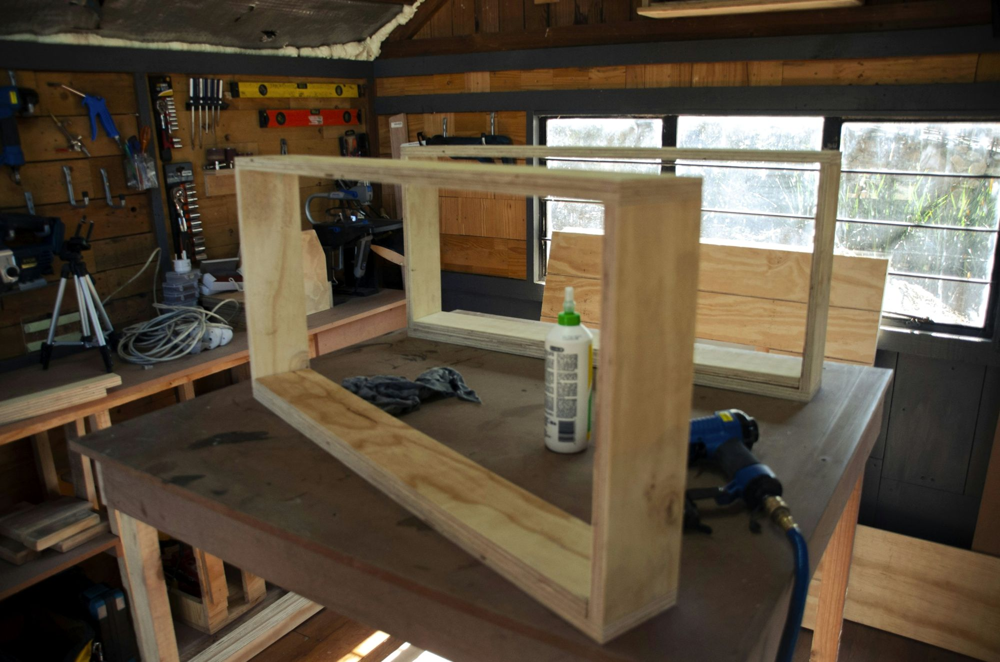
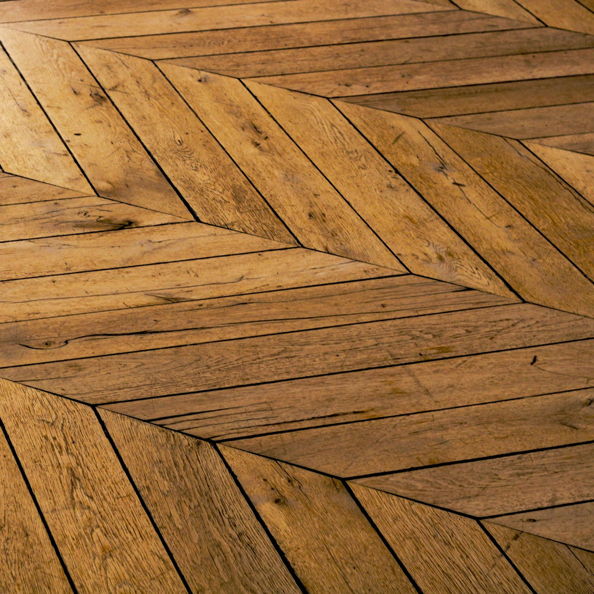

Ce que fabrique et pose l'atelier.
Quatre familles de travaux, une même équipe du dessin à la pose.

Cuisine
Un projet complet, avec visualisation 3D avant fabrication : implantation, meubles, plan de travail, électroménager et accessoires.

Fenêtres et volets
Installation de fenêtres en aluminium, mixte, bois ou PVC, volets et menuiserie extérieure.

Escaliers et menuiserie intérieure
Fabrication d'escaliers sur mesure, menuiserie intérieure, portes et placards.

Dressing et parquet
Aménagement de dressing et pose de parquets, pour finir la pièce.